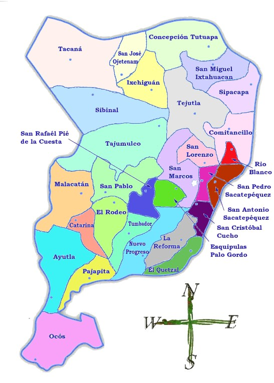

División Política
San Marcos tiene 29 municipios (Diccionario Municipal de Guatemala, 2001):

- San Marcos (municipio)
- Ayutla
- Catarina
- Comitancillo
- Concepción Tutuapa
- El Quetzal
- El Rodeo
- El Tumbador
- Esquipulas Palo Gordo
- Ixchiguán
- La Reforma
- La Blanca
- Malacatán
- Nuevo Progreso
- Ocos
- Pajapita
- Río Blanco
- San Antonio Sacatepéquez
- San Cristóbal Cuchó
- San José Ojetenam
- San Lorenzo
- San Miguel Ixtahuacán
- San Pablo
- San Pedro
- San Rafael Pie de la Cuesta
- Sibinal
- Sipacapa
- Tacaná
- Tajumulco
- Tejutla
La Blanca se convirtió en municipio del departamento oficialmente el 23 de enero de 2014, tras un decreto del Congreso de la República de Guatemala (Gramajo y Escobar, 2014).
Además se producen instrumentos musicales, máscara, cerería, artículos de cuero, pirotecnia, etc…